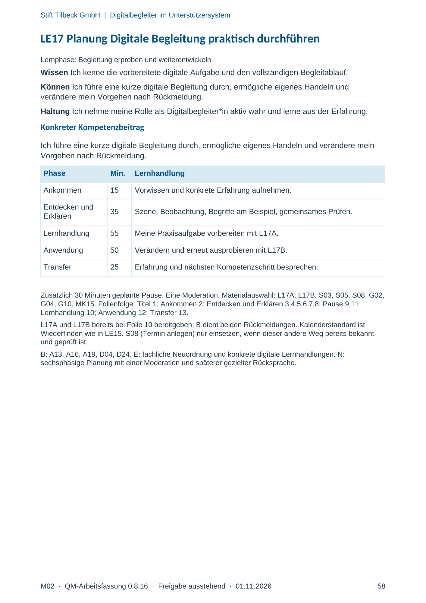
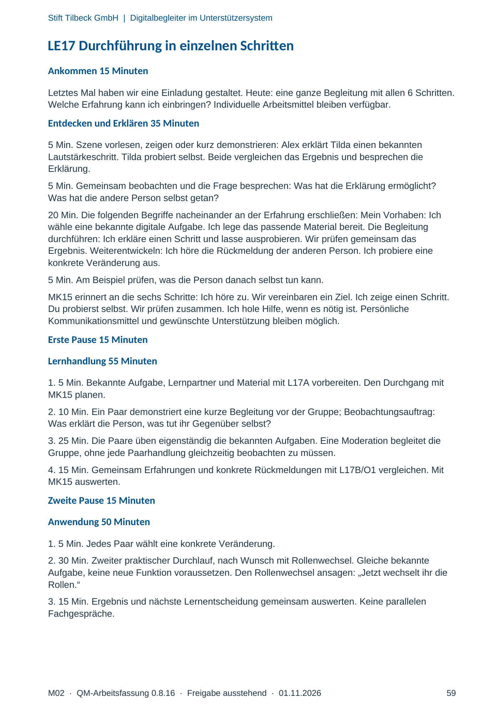
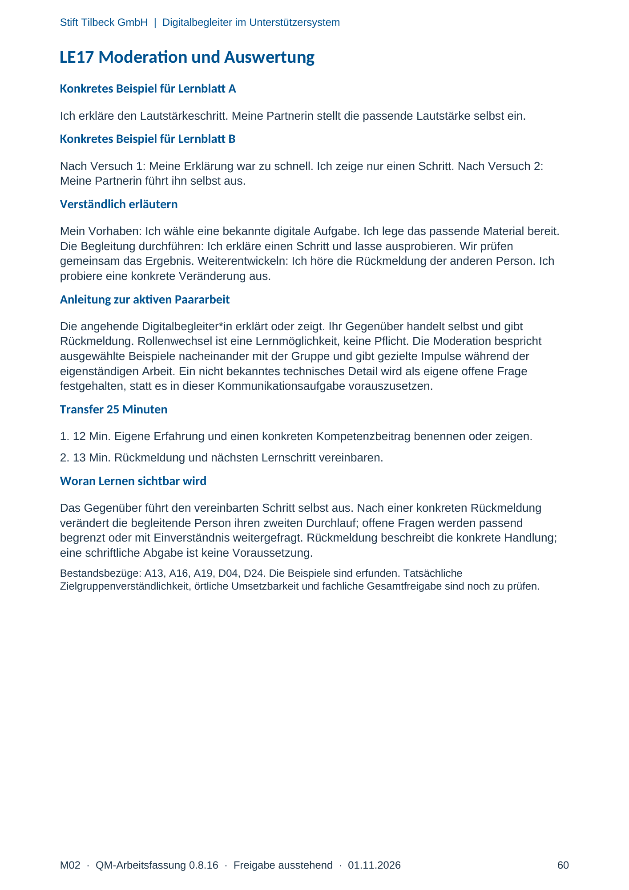

M02 · Originalseite 58, 59, 60
Handbuch und Muster
Gezielte Original-Druckauswahl.
Fragen und Ankreuzfelder werden auf dem Ausdruck bearbeitet. Die Lesefassung speichert keine Antworten.
Lesefassung · Seite 58
Stift Tilbeck GmbH | Digitalbegleiter im Unterstützersystem
M02 · QM-Arbeitsfassung 0.8.16 · Freigabe ausstehend · 01.11.2026 58
LE17 Planung Digitale Begleitung praktisch durchführen
Lernphase: Begleitung erproben und weiterentwickeln
Wissen Ich kenne die vorbereitete digitale Aufgabe und den vollständigen Begleitablauf.
Können Ich führe eine kurze digitale Begleitung durch, ermögliche eigenes Handeln und
verändere mein Vorgehen nach Rückmeldung.
Haltung Ich nehme meine Rolle als Digitalbegleiter*in aktiv wahr und lerne aus der Erfahrung.
Konkreter Kompetenzbeitrag
Ich führe eine kurze digitale Begleitung durch, ermögliche eigenes Handeln und verändere mein
Vorgehen nach Rückmeldung.
Phase Min. Lernhandlung
Ankommen 15 Vorwissen und konkrete Erfahrung aufnehmen.
Entdecken und
Erklären 35 Szene, Beobachtung, Begriffe am Beispiel, gemeinsames Prüfen.
Lernhandlung 55 Meine Praxisaufgabe vorbereiten mit L17A.
Anwendung 50 Verändern und erneut ausprobieren mit L17B.
Transfer 25 Erfahrung und nächsten Kompetenzschritt besprechen.
Zusätzlich 30 Minuten geplante Pause. Eine Moderation. Materialauswahl: L17A, L17B, S03, S05, S08, G02,
G04, G10, MK15. Folienfolge: Titel 1; Ankommen 2; Entdecken und Erklären 3,4,5,6,7,8; Pause 9,11;
Lernhandlung 10; Anwendung 12; Transfer 13.
L17A und L17B bereits bei Folie 10 bereitgeben; B dient beiden Rückmeldungen. Kalenderstandard ist
Wiederfinden wie in LE15. S08 (Termin anlegen) nur einsetzen, wenn dieser andere Weg bereits bekannt
und geprüft ist.
B: A13, A16, A19, D04, D24. E: fachliche Neuordnung und konkrete digitale Lernhandlungen. N:
sechsphasige Planung mit einer Moderation und späterer gezielter Rücksprache.
Originalseite ansehen

Lesefassung · Seite 59
Stift Tilbeck GmbH | Digitalbegleiter im Unterstützersystem
M02 · QM-Arbeitsfassung 0.8.16 · Freigabe ausstehend · 01.11.2026 59
LE17 Durchführung in einzelnen Schritten
Ankommen 15 Minuten
Letztes Mal haben wir eine Einladung gestaltet. Heute: eine ganze Begleitung mit allen 6 Schritten.
Welche Erfahrung kann ich einbringen? Individuelle Arbeitsmittel bleiben verfügbar.
Entdecken und Erklären 35 Minuten
5 Min. Szene vorlesen, zeigen oder kurz demonstrieren: Alex erklärt Tilda einen bekannten
Lautstärkeschritt. Tilda probiert selbst. Beide vergleichen das Ergebnis und besprechen die
Erklärung.
5 Min. Gemeinsam beobachten und die Frage besprechen: Was hat die Erklärung ermöglicht?
Was hat die andere Person selbst getan?
20 Min. Die folgenden Begriffe nacheinander an der Erfahrung erschließen: Mein Vorhaben: Ich
wähle eine bekannte digitale Aufgabe. Ich lege das passende Material bereit. Die Begleitung
durchführen: Ich erkläre einen Schritt und lasse ausprobieren. Wir prüfen gemeinsam das
Ergebnis. Weiterentwickeln: Ich höre die Rückmeldung der anderen Person. Ich probiere eine
konkrete Veränderung aus.
5 Min. Am Beispiel prüfen, was die Person danach selbst tun kann.
MK15 erinnert an die sechs Schritte: Ich höre zu. Wir vereinbaren ein Ziel. Ich zeige einen Schritt.
Du probierst selbst. Wir prüfen zusammen. Ich hole Hilfe, wenn es nötig ist. Persönliche
Kommunikationsmittel und gewünschte Unterstützung bleiben möglich.
Erste Pause 15 Minuten
Lernhandlung 55 Minuten
1. 5 Min. Bekannte Aufgabe, Lernpartner und Material mit L17A vorbereiten. Den Durchgang mit
MK15 planen.
2. 10 Min. Ein Paar demonstriert eine kurze Begleitung vor der Gruppe; Beobachtungsauftrag:
Was erklärt die Person, was tut ihr Gegenüber selbst?
3. 25 Min. Die Paare üben eigenständig die bekannten Aufgaben. Eine Moderation begleitet die
Gruppe, ohne jede Paarhandlung gleichzeitig beobachten zu müssen.
4. 15 Min. Gemeinsam Erfahrungen und konkrete Rückmeldungen mit L17B/O1 vergleichen. Mit
MK15 auswerten.
Zweite Pause 15 Minuten
Anwendung 50 Minuten
1. 5 Min. Jedes Paar wählt eine konkrete Veränderung.
2. 30 Min. Zweiter praktischer Durchlauf, nach Wunsch mit Rollenwechsel. Gleiche bekannte
Aufgabe, keine neue Funktion voraussetzen. Den Rollenwechsel ansagen: „Jetzt wechselt ihr die
Rollen.“
3. 15 Min. Ergebnis und nächste Lernentscheidung gemeinsam auswerten. Keine parallelen
Fachgespräche.
Originalseite ansehen

Lesefassung · Seite 60
Stift Tilbeck GmbH | Digitalbegleiter im Unterstützersystem
M02 · QM-Arbeitsfassung 0.8.16 · Freigabe ausstehend · 01.11.2026 60
LE17 Moderation und Auswertung
Konkretes Beispiel für Lernblatt A
Ich erkläre den Lautstärkeschritt. Meine Partnerin stellt die passende Lautstärke selbst ein.
Konkretes Beispiel für Lernblatt B
Nach Versuch 1: Meine Erklärung war zu schnell. Ich zeige nur einen Schritt. Nach Versuch 2:
Meine Partnerin führt ihn selbst aus.
Verständlich erläutern
Mein Vorhaben: Ich wähle eine bekannte digitale Aufgabe. Ich lege das passende Material bereit.
Die Begleitung durchführen: Ich erkläre einen Schritt und lasse ausprobieren. Wir prüfen
gemeinsam das Ergebnis. Weiterentwickeln: Ich höre die Rückmeldung der anderen Person. Ich
probiere eine konkrete Veränderung aus.
Anleitung zur aktiven Paararbeit
Die angehende Digitalbegleiter*in erklärt oder zeigt. Ihr Gegenüber handelt selbst und gibt
Rückmeldung. Rollenwechsel ist eine Lernmöglichkeit, keine Pflicht. Die Moderation bespricht
ausgewählte Beispiele nacheinander mit der Gruppe und gibt gezielte Impulse während der
eigenständigen Arbeit. Ein nicht bekanntes technisches Detail wird als eigene offene Frage
festgehalten, statt es in dieser Kommunikationsaufgabe vorauszusetzen.
Transfer 25 Minuten
1. 12 Min. Eigene Erfahrung und einen konkreten Kompetenzbeitrag benennen oder zeigen.
2. 13 Min. Rückmeldung und nächsten Lernschritt vereinbaren.
Woran Lernen sichtbar wird
Das Gegenüber führt den vereinbarten Schritt selbst aus. Nach einer konkreten Rückmeldung
verändert die begleitende Person ihren zweiten Durchlauf; offene Fragen werden passend
begrenzt oder mit Einverständnis weitergefragt. Rückmeldung beschreibt die konkrete Handlung;
eine schriftliche Abgabe ist keine Voraussetzung.
Bestandsbezüge: A13, A16, A19, D04, D24. Die Beispiele sind erfunden. Tatsächliche
Zielgruppenverständlichkeit, örtliche Umsetzbarkeit und fachliche Gesamtfreigabe sind noch zu prüfen.
Originalseite ansehen
